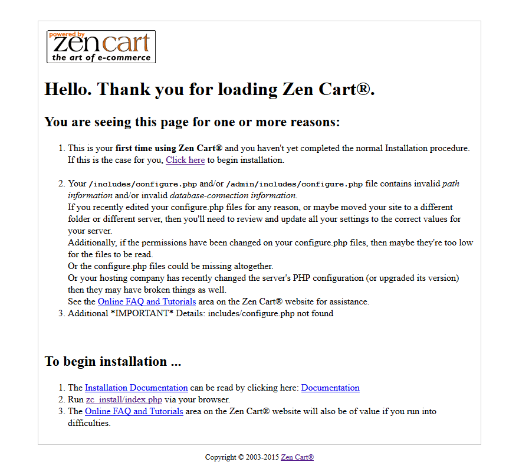
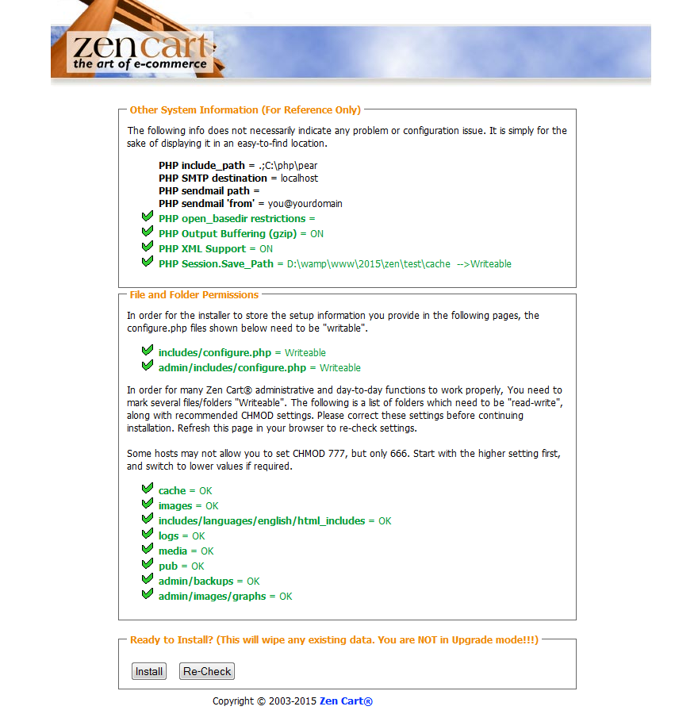
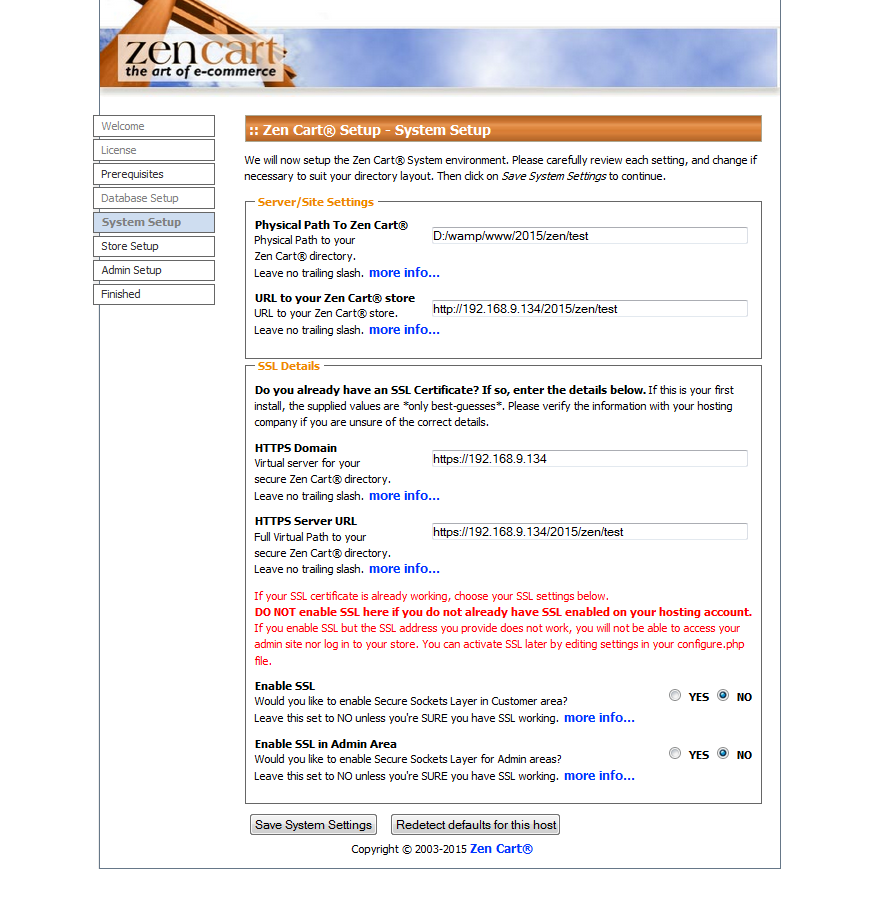
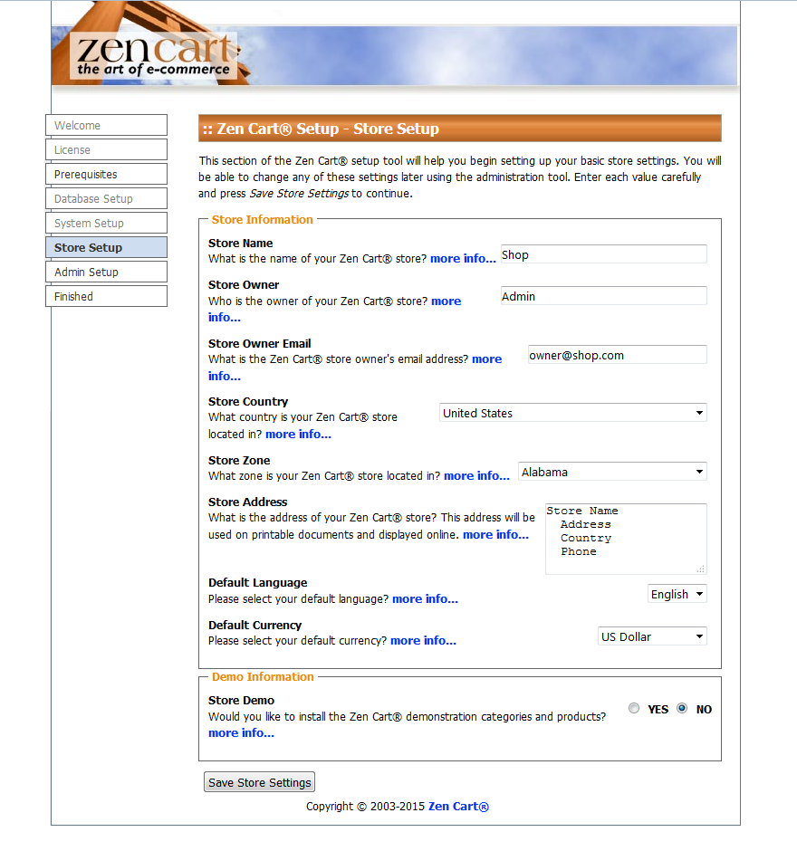
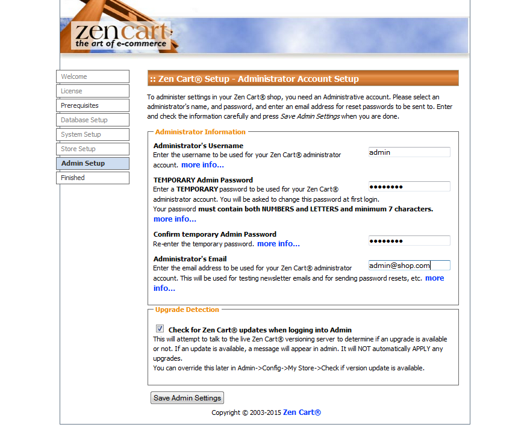

Introduction What can be found in this package and what it can be used for
Thank you for purchasing Zen Cart template. This documentation consist of several parts and shows you the entire process how to setup and administers Zen Cart Web site from scratch. We did our best to make this manual as clear and easy to follow as possible.
What is Zen Cart?
Zen Cart is an Open Source e-commerce application. It is written in PHP and requires a MySQL database. Zen Cart provides easy customizations of your online store. Zen Cart has a built-in system for receiving online payments, setting tax and discount rates, etc. Learn More
What is Zen Cart a template
Zen Cart template is a skin for your Zen Cart platform. In other words you can easily change your Zen Cart Web site appearance installing new template in a few easy steps. With all it's simplicity Zen Cart template is provided with all necessary source files and you are free to edit or extend it the way you need.
Files structure
The template package you have downloaded consists of several folders. Let's see what each folder contains :
- Documentation - contains documentation files
- index_en.html - main documentation file. You are right here :)
- theme### - contains Zen Cart theme files
- Screenshots - contains template screenshots. Not for production
- Sources - contains template source files
- psd - template Adobe Photoshop source files (.psd)
- images - product images, social services and key lightbox
- ZENCART_FULL.sql - contains sample banners, categories, products settings
- ZENCART_SHORT.sql - contacts only store and theme settings
- ZENCART_SLIDER.sql - slider on homepage
- ZENCART_SOCIAL.sql - set of social icons on the product page
- fonts_info.txt - contains links where the template custom fonts can be downloaded
- info.txt - contains instructions on how to extract source files
Prepare What do you need to make this work
Before you proceed to setting up your Zen Cart Web site please make sure you are fully prepared. Please complete the following preparation steps:
Editing software
To feel comfortable working with Zen Cart template we recommend you to download all applications required. You can see the list of required software at the template preview page.
The requirements may vary for different templates so we'll tell you here what is needed in general:
- First of all you need the right applications to extract the password protected sources_#########.zip archive. You can use WinZip 9+ (Windows) and Stuffit Expander 10+ (Mac).
- You may also need Adobe Photoshop application. It is used to edit .PSD source files and it necessary if you want to edit template design graphics and images.
- To edit template source code files you need some code editor like Adobe Dreamweaver, Notepad++, Sublime Text etc.
- To upload files to the hosting server you may need an FTP Manager like Total Commander, FileZilla, CuteFTP etc.
Hosting
As Zen Cart is a PHP/MySQL based application, you need to prepare a hosting environment to run Zen Cart.
If you have a live hosting please make sure it matches Zen Cart software requirements and is ready to be used for Zen Cart websites.
Otherwise you can run Zen Cart locally on your computer using the local server. To create a local hosting server please use the localhost applications as WAMP, AppServ, MAMP etc. Any of those can be easily installed as any other program and used to run Zen Cart.
Please check the tutorials below on how to configure local development environment:
Zen Cart engine installation
1. Downloading
To install Zen Cart you need to download the Zen Cart engine package from the official website at www.zen-cart.com. Just click a 'Download' button in the right box.
Please make sure your version of Zen Cart engine matches the template requirements. All versions of Zen Cart are available at
SourceForge
2. Extracting Files
Once the Zen Cart engine package is downloaded, you will need to extract its files and folders from the archive.
This can be done with any archive manager like WinZip(PC), StuffitExpander(MAC) etc.
Please check the following tutorials on how to extract files from the archives with WinZip(PC) and StuffitExpander(MAC).
Please note: if your hosting control panel has the option to 'Extract' files, you can use it to extract the files directly on your server after the .zip file is uploaded.
3. Uploading Zen Cart engine files
In case you’ve extracted the files locally to your computer, you will need to upload them to your hosting server.
This can be done using the hosting control panel File Manager or third party FTP Manager applications like FileZilla, TotalCommander, CureFTP etc.
You can check the detailed video tutorial on how to upload files to server using FTP manager and how to upload files to a server using cPanel (WebHost Manager, WHM).
4. Zen Cart engine installation
When you are done with the files upload you can start the Zen Cart engine installation. Open your web browser and type in the 'domain name/path to your Zen Cart directory' in the address bar and reload the current page. You should see the welcome screen. Please follow the instructions below to install Zen Cart.
Step 1: Installation Assistant
Click the “Click here to begin the installation” link.
Step 2: Installation Assistant (License agreements)
Please check the license agreement.
When you are done, click 'Continue' button.
Step 3: Installation Assistant (License Confirmation)
When you are done, select 'I have read and agree to abide by the Terms and Conditions as stated above.' and click 'Continue' button.
Step 4: System Inspection
Make sure your hosting server matches the ZenCart engine requirements. Otherwise you’ll see the error message. Contact your hosting provider if the System Inspection screen shows any errors. If everything is OK click Install button at the bottom of the screen.
If everything is correct, click the 'Install' button.
Step 5: Database Setup
At the Database setup step you need to input your database details. Note that you should have a new database created. Feel free to check the detailed tutorial on how to create a database.
You need to input the database host name, user name, password and database name. All these details can be obtained from your hosting control panel or contacting your hosting provider.
When you are done, click 'Save Database Settings' button.
Step 6: System Setup
At the System Setup step you can define the root to your ZenCart installation and install SSL certificate. If you are not sure please do not perform any changes on this step. Click the Save System Settings at the bottom of the screen to proceed.
When you are done, click 'Save System Settings' button.
Step 7: Store Setup
Store setup step lets you input the store info like store name, country and region. The Store demo at the bottom allows you to install the default ZenCart sample data – sample products that allow to test the store functionality. If you are using purchased ZenCart template there is no need to install default demo store. The sample products are provided within the template package.
When you are done, click 'Save Store Settings' button.
Step 8: Administrator Account Setup
At the Administrator Account Setup step you need to create the store administrator account. Input Administrator user name, email and password. Keep these details save to avoid unauthorized access.
When you are done, click 'Save Admin Settings' button.
Step 10: Setup - Finished
Congratulations. You’ve successfully installed ZenCart store. Use the buttons at the bottom of the screen to access the store frontend or the ZenCart administration panel.
Fore security reasons it is highly recommended to set permissions for the configuration files to read only and rename the admin folder
Now you are ready to proceed to configuring your Zen Cart based Web site. Click 'Click here to go to the Store' button to view your Web site or 'Click here to open the Admin area' to view Zen Cart backend.
Please check the detailed video tutorial on how to install Zen Cart engine.
Template installation
How to install a Zen Cart Template.
First of all you need to download the purchased template to your computer. The download link is available from your order details page.
When the template download is complete you need to extract the files from the downloaded package. This can be done using the WinZip (Windows OS) or Stuffit Expander (MAC OS) applications. Don't forget to extract the files from the inner sources_XXXX.zip package. The sources archive is password protected and contains the template source files. The password can be obtained from the order details page.
1. Open the 'themeXXX' folder and upload the 'includes' folder to Zen Cart installation root on your server.
Check your 'admin' folder, in our template folder called 'admin123', it is necessary that the folder names match. If the folders are named differently, call them equally
Please note: Replacement of these files will not damage your store
2. Then open Zen Cart store admin panel and go to 'Tools > Template Selection'
3. In the right column click Edit button and in the appeared select box choose new template (themeXXX).
How to install Zen Cart sample data
To make your template look like on the live demo you need to install the template sample data. Sample data contains the website settings, sample products, modules, menus, images etc. It is useful when you want to see the template functionality or the examples of the pages design and layout.
Zen Cart templates are provided with four SQL files that contains all website sample content(except the images) and sample website settings. The SQL files can be imported into your database using your database management tool (usually phpMyAdmin) or directly through Zen Cart admin panel: Tools > Install SQL Patches
- ZENCART_FULL.sql – contains sample banners, categories, products settings. Use it with clear Zen Cart installation.
- ZENCART_SHORT.sql – contacts only store and theme settings. Installing short dump won't replace your store goods.
- ZENCART_SOCIAL.sql - set of social icons on the product page
- ZENCART_SLIDER.sql - slider on homepage
ATTENTION: Importing the SQL file to your database will overwrite your existing content and website settings. DO NOT import the SQL file if you want to keep the existing content
NOTE: ALWAYS backup your database before performing any modifications
IMPORTANT: the .sql files must be imported in a strict order. First you should upload ZENCART_SHORT.SQL and only after that – ZENCART_FULL.SQL. Other SQL files can be imported in any order
To install sample data provided with the template you should open Zen-Cart admin panel > Tools > Install SQL Patches
You will get 2 options, either execute SQL query or upload .sql file. The result will be the same either option you choose. We’ll stay with the second option as the template includes 4 .sql files.
Click on the 'Browse' button and navigate to 'sources' folder of the template package, select the .sql file and press the 'Upload' button to execute it
Feel free to check the detailed tutorial on how to install Zen Cart template sample data
How to manage modules
To manage Left/Right boxes open Zen Cart admin panel > Tools > Layout Boxes Controller.
You will see the list of available modules. Select one, then in the right pane click 'Edit' button.
When you use both left and right columns you can change the following properties:
- Left/Right Column Status: ON=visible, OFF=hidden
- Location: LEFT or RIGHT position of the sidebox
- Left/Right Column Sort Order: low number sideboxes comes on the top of the column
Note that Single Column settings do not currently affect the page display, and can generally be ignored.
If you would not like any side boxes on this site please, simply go to your admin under 'Configuration', then 'Layout Settings', and set the 'Column Left Status - Global' 'Column Right Status - Global' to '0'. This will turn off both left and right side boxes globally, whether or not any of them are set to 'on' under 'Layout Boxes Controller'.
Theme customization
How to change store logo
To use your own logo, simply overwrite 'logo.jpg'('logo.png') that is located in includes/templates/themeXXX/images/ .
You can create an image that is larger than the default one. If it doesn't match the header dimensions you'll need to perform style modifications in the /includes/templates/themeXXX/css/stylesheet_tm.css file.
How to change store colors
To change the site colors you need to edit the CSS files in the /includes/templates/themeXXX/css/. You can learn more about working with the CSS files checking the detailed video tutorials.
Zen Cart Add-ons:
Extra Product Images
The new Zen-cart feature allows you to display the additional product images on the product page and open them in the lightbox. To make the extra images display on the product page please put them into the folder with the product images.
- Open Zen Cart admin panel
- Go to Catalog > On the product editing screen scroll down and find the image file name and open the product you want to modify.
- On the product editing screen scroll down and find the image file name
Create new product images with the names, that contain the default product image file name.
For example:
Default product image name: 01.jpg
Additional product image names: 01_1.jpg, 01-2.jpg etc
or
Default product image name: my_product.jpg
Additional product image names: my_product _1.jpg, my_product -2.jpg etc
Default product image name: 01.jpg
Additional product image names: 01_1.jpg, 01-2.jpg etc
or
Default product image name: my_product.jpg
Additional product image names: my_product _1.jpg, my_product -2.jpg etc
Upload the additional images to the directory where the default image is located. Usually the product images are stored in the 'images' directory of your Zen Cart installation.
When the upload is complete open the product page in browser and refresh it. You should see additional images at the bottom of the page.
The number of additional images is unlimited.
Conclusion where to get help, support and additional information
Zen Cart engine is a great solution for your online store. The default engine package contains all modules necessary for successful sales. Open source allows you to offer really outstanding merchant possibilities for your customers. Due to the quite complex engine structure advanced usage of Zen Cart will require much time and aspiration. You'll need much more than this manual.
Useful resources
Live Chat Olark
To get your data, you can register on Olark website and do all the required steps to get your code.
Then, open includes/templates/themeXXX/common/tpl_main_page.php file and insert the received code between the lines begin olark code and end olark code and save the file.
Customers who purchased the template are provided with 6 months Olark chat usage for free. To register 6 months Free bronze package you should follow Olark registration link
Loading data from Google servers
Some countries have issues connecting to Google servers. This can cause issues loading Google Fonts and Java Script libraries from Google CDN. To resolve these issues please do the following:
Can't load Google Fonts:
- Open \includes\templates\themeXXX\common\html_header.php file
- Locate the line:
$doc->addStyleSheet('//fonts.googleapis.com/css?family=[---your_web_font_name_here---]'); - Replace it with the following:
$doc->addStyleSheet('//fonts.useso.com/css?family=[---your_web_font_name_here---]');
Can't load jQuery
- Locate the line:
<script src="//ajax.googleapis.com/ajax/libs/jquery/[---your_jquery_version---]/jquery.min.js"></script>
- Replace with the following:
<script src="//code.jquery.com/jquery-[---your_jquery_version---].min.js"></script>
You can also use local copy of jQuery library.